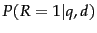
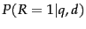

A common suggestion to users for coming up with good queries is to think of words that would likely appear in a relevant document, and to use those words as the query. The language modeling approach to IR directly models that idea: a document is a good match to a query if the document model is likely to generate the query, which will in turn happen if the document contains the query words often. This approach thus provides a different realization of some of the basic ideas for document ranking which we saw in Section 6.2 (page  ). Instead of overtly modeling the probability  of relevance of a document
). Instead of overtly modeling the probability  of relevance of a document  to a query
to a query  , as in the traditional probabilistic approach to IR (Chapter 11 ), the basic language modeling approach instead builds a probabilistic language model
, as in the traditional probabilistic approach to IR (Chapter 11 ), the basic language modeling approach instead builds a probabilistic language model  from each document
from each document  , and ranks documents based on the probability of the model generating the query:
, and ranks documents based on the probability of the model generating the query:  .
.
In this chapter, we first introduce the concept of language models (Section 12.1 ) and then describe the basic and most commonly used language modeling approach to IR, the Query Likelihood Model (Section 12.2 ). After some comparisons between the language modeling approach and other approaches to IR (Section 12.3 ), we finish by briefly describing various extensions to the language modeling approach (Section 12.4 ).